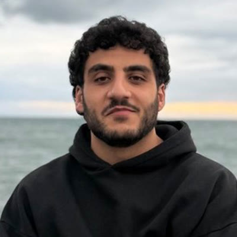
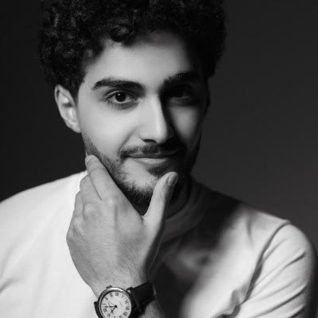

The fly's wiring is mapped. Its chemistry isn't.
Slice & scan
The brain is cut into thousands of layers, each about 40 nm thin, and imaged by electron microscope.
Trace
AI segmentation, including Google's, plus human proofreading, follows each neuron and finds its synapses.
15 M connections
Model
Each neuron becomes an equation. Spikes flow through the real map.
Body
A physics-simulated fly body that can walk, turn and sense.
Chemistry
Hormones, neurotransmitters and drugs: the signals that change what the same wiring does.
Same wiring. Different chemistry. Different decision?
Chemical state
the modeled dopamine signal
Brain activity
the output neurons that vote approach or avoid
Behavior
does the fly reach the food or not?
Food on the far side of a danger smell.
Reconstructed wiring
FlyWire connectome · 138,639 neurons
published dataDopamine mechanism
323 dopamine neurons whose release reshapes the choice
our layerPhysics body
NeuroMechFly walking on MuJoCo physics
open sourceOne setting changed. A different fly.
Reward dopamine stimulated
The decision swings to approach. The fly steers around the danger to the food.
✓ reaches food · 2.56 sPunishment dopamine stimulated
The approach signal drops to neutral. The fly hesitates and walks away.
✗ never reaches foodDanger smell switched off
Nothing warns the fly. It walks straight under the newspaper.
✗ swatted · 0.82 sFull physics simulation
If we copy part of a brain, how much behavior emerges on its own?
Which parts of the wiring and chemistry are enough to explain a behavior?
What are we still missing?
A partial digital copy turns both into experiments.
Labs have more questions than time and money.
One pathway at a time
A fly lab stimulates or blocks a brain pathway with genetics and light. Each experiment can take weeks of breeding and testing.
Test in simulation first
Try every pathway on the digital fly and rank which one to stimulate or block next. Fewer experiments, more useful answers.
Setup + access
- Model setup for the lab's experiment
- Software access for the team
How big, and who’s first
- First customers
- Fly neuroscience labs · behavioral-screening providers
- How we reach them
- Direct outreach to lab heads and screening directors · scientific collaborations · screening-provider partnerships
Market: 2026 biosimulation estimates range $4.3B–$5.8B across industry reports. Labs: FlyBase Fly Lab List.

David KaryanAI Automation Engineer
Grigori GrigoryanFull Stack EngineerTHANK YOU FOR YOUR ATTENTION!